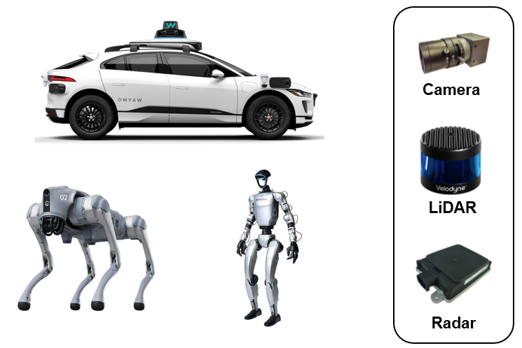
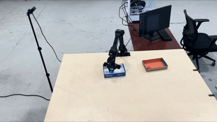
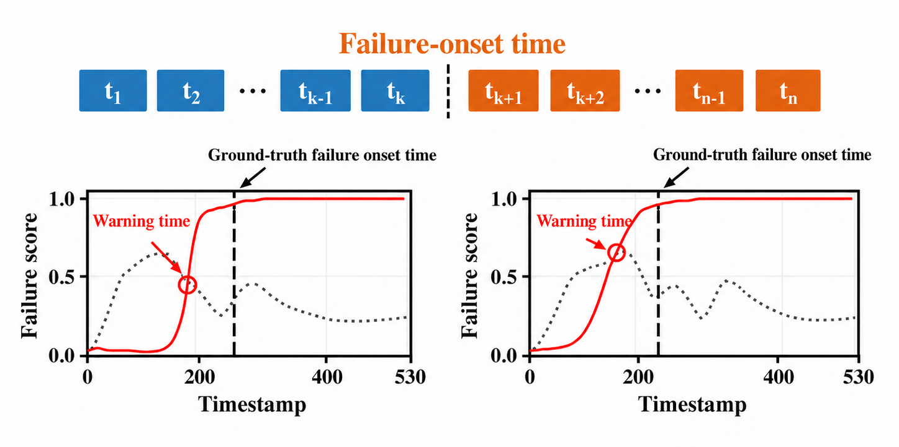
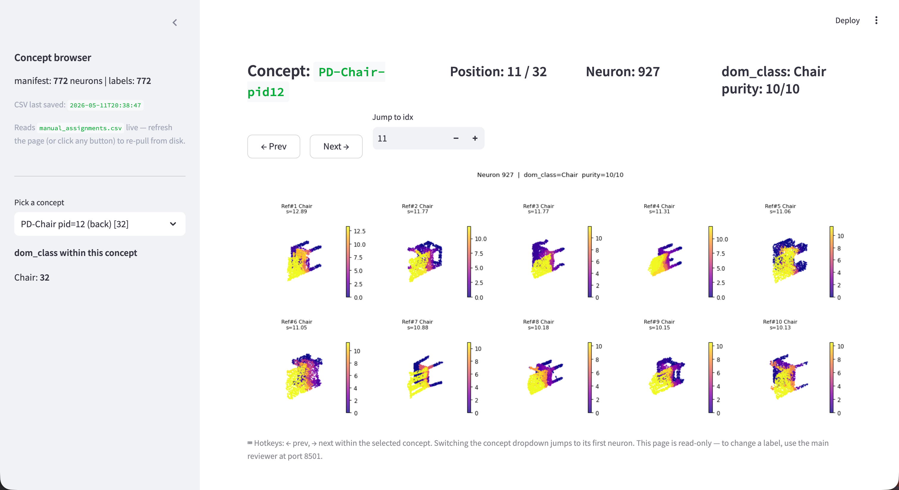
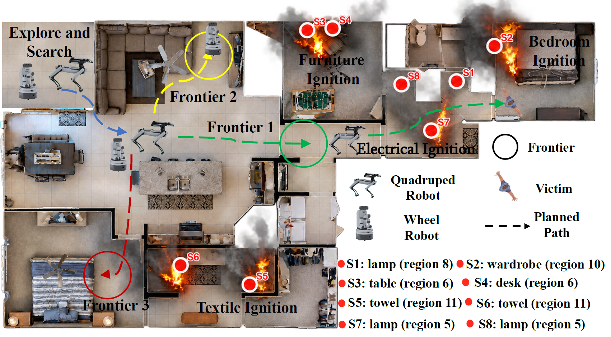

Security of Physical AI Systems
As AI increasingly interacts with the physical world, ensuring its security becomes critical. Our research investigates practical, low-cost attacks involving physical objects and environmental manipulation, which may pose widespread security risks due to their low barriers to execution and replication. We study security vulnerabilities in cameras, LiDAR, radar, and multimodal sensor fusion across diverse applications, from autonomous driving and robotics to emerging intelligent systems operating in the physical world. Our goal is to understand the real-world impact of these threats and develop practical defenses that enable Physical AI systems to operate reliably under adversarial conditions.
Security of multimodal perception:
CCS 2021 CCS 2021 Demo SenSys 2021 SenSys 2022 NDSS 2023 CCS 2023 CCS 2023 Demo MobiCom 2024
Advanced AI for Real-World Robotic Manipulation
Recent advances in foundation models and generative AI are transforming robotic intelligence, yet translating these capabilities into reliable real-world applications remains challenging. Our research explores advanced AI techniques, including vision-language-action models and world models, to develop intelligent robotic manipulation systems for diverse applications, such as industrial automation. We focus on addressing fundamental challenges in real-world deployment, including learning from limited data, generalization to unseen conditions, recovery from failures, and achieving consistently reliable performance, particularly in high-stakes applications.
IntelliMake factory: Agentic-AI-based manufacturing
WebsiteAutomated kitting:
Benchmark
AI Hallucination and Failure Mitigation
AI models can generate convincing but incorrect outputs or unreliable actions, posing significant risks when deployed in real-world applications. Our research investigates how to reliably predict model hallucinations with low latency before they lead to downstream failures, and how to automatically intervene to correct model behavior at runtime. We particularly focus on developing scalable methods that can operate on large-scale complex AI systems without requiring costly model training or fine-tuning, enabling practical safeguards for AI systems deployed in real-world applications.
Hallucination/failure prediction:
Interpretable failure prediction failure prediction for vision-language-action models
Mechanistic Interpretability of Multimodal AI
Modern AI models can recognize complex scenes and perform sophisticated tasks, yet the internal mechanisms driving their decisions remain poorly understood. Our research investigates how multimodal AI models encode human-interpretable concepts, such as objects, geometric structures, and spatial relationships, and how these representations causally influence model behavior. Our goal is to develop scalable and actionable interpretability methods across diverse AI models and modalities, enabling practitioners to predict, explain, and audit model behavior.

Multi-Agent Perception, Navigation, and Reasoning
Individual AI agents often have limited information and capabilities, making collaboration essential for solving complex real-world tasks. Our research investigates how multiple intelligent agents can collaborate to improve perception, navigation, reasoning, and decision-making. We develop cooperative perception and navigation methods that enable aerial and ground agents to integrate complementary viewpoints and multimodal observations while addressing uncertainty and communication constraints. We also explore LLM-based multi-agent systems for collaborative reasoning, planning, and task execution.